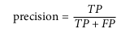

Classification Analysis
Performance Measure
Evaluating the performance of a classifier is trickier than evaluating the performance of a regressor. There are many performance measures available. Some of them are:
Using Cross Validation
Sometimes the user needs more control on the cross validation process, this can be achieved using StratifiedKFold
You can always cross_val_score in order to evaluate a model using cross validation.
Confusion Matrix
A much better way to evaluate the performance of a classifier is to take a look at the confusion matrix. The general idea is to count the number of times instances of a particular class, say ‘A’, are classified as another class, say ‘B’. For example, to know the number of times the classifier confused images of 5s with 3s, you would look in the 5 th3 row and 3 rd column of the confusion matrix.
To compute a confusion matrix first we need a set of predictions, so that they can be compared with the actual target.
Note: If you want to make predictions on the validation set you can use the function cross_val_predict
Each row in the confusion matrix represents an actual class, while each column represents a predicted class. A perfect classifier would have only true positives and true negatives, so its confusion matrix would have nonzero values only on its main diagonal (top left to bottom right).
The confusion matrix gives us a lot of information, but sometimes we may need a more ‘numeric’ or ‘precise’ measure. For such scenarios we can calculate the precision or recall of the classifier.
A. Precision
This gives us an idea about the number of accurate or ‘positive predictions’ made by the classifier, The formula is:  Here TP is the number of true positives, and FP is the number of false positives.
B.Recall
This is also known as sensitivity or true positive rate. The precise definition of recall is the number of true positives divided by the number of true positives plus the number of false negatives. True positives are data points classified as positive by the model that actually are positive (meaning they are correct), and false negatives are data points the model identifies as negative that actually are positive (incorrect). The formula is:
The Precision vs Recall trade off
To understand this tradeoff let us take the example of an SGD Classifier. The classifier computes a score based on decision function (we will take a look at this in the later chapters), that states if the value is greater than a threshold, it gets assigned to the positive class.( Sklearn does not give direct access to the threshold, but gives access to the decision scores)
ROC Curve
ROC (Receiver Operating Characteristics) curve is another tool for measuring accuracy of classifiers. This curve or graph is similar to an precision vs recall curve, but instead it plots the true positive rate against the false positive rate.
The false positive rate(FPR) is the ratio of negative instances that are incorrectly classified as positive.The true negative rate(TNR) is also called the specificity. Ultimately the ROC curve visualises sensitivity, in the form of a recall vs specificity graph.
FPR=1-TNR
This graph however shows us the same tradeoff, that is, higher the recall(FPR) the more false positives the classifier produces.
One way to measure classifiers is to measure the area under curve (AUC). A perfect classifier will have an ROC AUC score equal to 1, while a purely random classifier will have an ROC AUC score of 0.5.
Multiclass classification
When a classifier distinguishes multiple classes it is called a multi-class classifier. Random forest and naive bayes are examples of such classifiers. SVM’s and other linear classifiers fall under the category of binary classifiers. However you can combine various binary classifiers and form a multiclass classifier. There 2 popular approaches to do this:
A.One vs All
In this we train about ‘N’ models (where N is the number of classes), in the form of one class vs the rest of the classes. When we use this to classify something, we receive a decision score from each single classifier. We finally select the class that has the highest score.
B.One vs One
In this we train N(N-1)/2 models (where N is the number of classes). Here you pick a pair of classes to perform binary classification. When we want to classify something we pick the result of the binary classifier that has the highest score.
Some algorithms scale poorly with the size of the training set. For such algorithms it is best to use the One vs One strategy.This is because this method is faster as training multiple classifiers on a small set of data is faster than training large data over a small number of classifiers.
Multilabel Classification
Sometimes an instance may be classified to more than one class. Classifying such cases is called multilabel classification. For example, a facial recognition system that recognizes 3 faces,say A,B and C. When provided with a picture with faces A,C and D it should be able to recognize A and C.
Multi Output Classification
This is a generalization of multilabel classification, where the label can be a multiclass